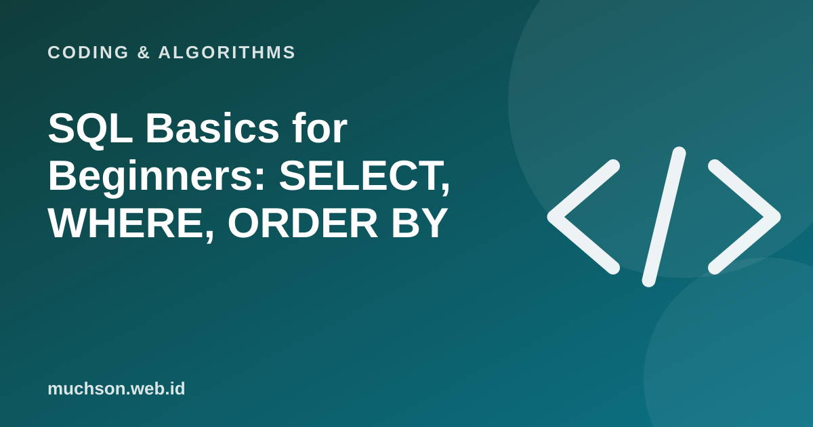

Home › Articles › Coding & Algorithms
Coding & AlgorithmsSQL Basics for Beginners: SELECT, WHERE, ORDER BY
SQL is a language for asking questions of a database. The basics are surprisingly simple and read almost like sentences. Below is a mini table: change the options and see the SQL query and its result appear.

A table is rows and columns
A relational database stores data in tables. Each row represents one record (for example one student), and each column represents one attribute (name, grade, score). SQL lets you choose columns, filter rows and sort them.
Four main key words
| Key word | Function | Example |
|---|---|---|
| SELECT | Choose the columns to show | SELECT name, score |
| FROM | Name the source table | FROM students |
| WHERE | Filter rows | WHERE grade = '10-A' |
| ORDER BY | Sort the result | ORDER BY score DESC |
SELECT name, score
FROM students
WHERE score >= 80
ORDER BY score DESC;Next steps
- COUNT, SUM, AVG: count, total and average.
- GROUP BY: group, for example the average score per grade.
- JOIN: combine two related tables.
- INSERT, UPDATE, DELETE: add, change and delete data.
Be careful
UPDATE and DELETE commands without WHERE change or delete every row. Always test with a SELECT first on the same condition.
FAQ
SQL or NoSQL?
SQL (relational) suits structured data with relationships. NoSQL suits flexible data or particular scales. Many applications use SQL, and PostgreSQL is among the most popular with developers.
Is SQL the same in every database?
The basics are the same. There are dialect differences in advanced features between databases such as MySQL, PostgreSQL and SQLite.
How can I practise without a database?
Use SQLite or an in-browser SQL practice service, or a demo like the one in this article.